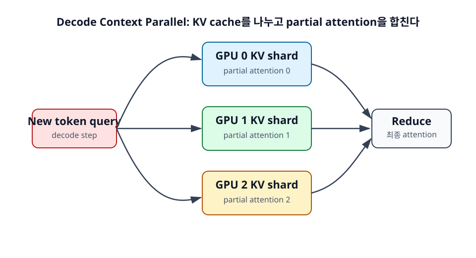

15장. Decode Context Parallel 집중 이해¶
Decode Context Parallel(DCP)은 long-context decode의 KV cache 문제를 해결하기 위한 병렬화 방식이다. 긴 context에서는 KV cache가 GPU memory를 크게 차지하고, decode 때마다 이 cache를 참조해야 한다. DCP는 KV cache를 여러 GPU에 나누어 저장하고, 각 GPU가 partial attention을 계산한 뒤 결과를 합친다.

학습 목표¶
- DCP가 필요한 상황을 판단한다.
- KV cache shard와 partial attention의 동작을 직관적으로 이해한다.
- DCP의 memory 이득과 communication 비용을 함께 평가한다.
15.1 DCP가 필요한 상황¶
DCP는 모든 추론 요청에 필요한 기본 병렬화가 아니다. Context가 길고 KV cache가 memory bottleneck이 되며, 기존 TP나 DP만으로 long-context throughput을 확보하기 어려울 때 의미가 커진다.
15.1.1 Context가 매우 긴 경우¶
Context가 짧으면 KV cache도 상대적으로 작다. 이때 DCP를 적용하면 memory 이득보다 통신 overhead가 더 클 수 있다. 반대로 64K, 128K, 그 이상의 context를 다루는 workload에서는 KV cache가 커져 DCP의 이득이 커질 수 있다.
긴 문서 분석, 대규모 코드 context, 장기 대화, long-context RAG가 대표적인 후보 workload다.
15.1.2 KV cache가 batch size를 제한하는 경우¶
GPU memory가 KV cache로 가득 차면 batch size를 키울 수 없다. Batch size가 제한되면 throughput이 떨어지고, queueing이 늘 수 있다. DCP는 KV cache를 여러 GPU에 분산해 각 GPU의 memory 부담을 낮출 수 있다.
즉 DCP의 목적은 단순히 "빠르게 계산"이 아니라 "긴 context 요청을 더 많이 수용할 수 있게 만들기"에 가깝다.
15.1.3 TP만으로 KV cache 중복 문제가 생기는 경우¶
Tensor Parallel은 weight와 layer 내부 계산을 나누는 데 효과적이다. 하지만 구현에 따라 KV cache가 TP group 안에서 중복되거나, context 길이가 길수록 cache memory가 부담이 될 수 있다. 이때 TP만 늘리는 것은 KV cache 문제를 충분히 해결하지 못할 수 있다.
DCP는 context shard 방향으로 KV cache를 나누므로, TP와 다른 문제를 겨냥한다. 대규모 serving에서는 TP와 DCP가 함께 고려될 수 있다.
15.2 DCP의 직관적 동작¶
DCP의 동작은 세 단계로 볼 수 있다. 첫째, 전체 KV cache를 여러 GPU에 나눈다. 둘째, 새 token의 Query가 각 shard를 참조한다. 셋째, GPU별 partial attention 결과를 합쳐 최종 output을 만든다.
15.2.1 전체 KV cache를 여러 GPU에 나눈다¶
전체 context가 96K token이고 GPU가 3장이라면, 각 GPU가 32K token 범위의 KV cache를 담당할 수 있다. 실제 구현은 더 복잡하지만, 입문자에게 필요한 직관은 "모든 GPU가 전체 KV cache를 들고 있지 않는다"는 점이다.
이렇게 하면 각 GPU의 KV cache memory 사용량이 줄어든다. Long-context에서 batch size를 늘릴 여지가 생길 수 있다.
15.2.2 새 token의 query는 여러 KV shard를 참조한다¶
Decode step에서 새 token 하나가 들어오면, 이 token의 Query는 전체 과거 context를 봐야 한다. DCP에서는 전체 context가 여러 GPU에 나뉘어 있으므로 Query가 각 GPU의 KV shard와 attention을 계산한다.
각 GPU는 자기 shard에 대해서만 partial attention을 계산한다. 이 partial 결과만으로는 최종 attention output이 완성되지 않는다.
15.2.3 Partial attention 결과를 모아 최종 출력을 만든다¶
각 GPU가 계산한 partial attention 결과는 전체 context 기준으로 합쳐져야 한다. Softmax normalization과 attention output을 정확히 구성하려면 GPU 간 통신이 필요하다. 이 reduce 과정이 DCP의 핵심 비용이다.
따라서 DCP는 memory를 줄이는 대신 통신을 추가한다. 이 trade-off를 이해해야 DCP가 언제 좋은지 판단할 수 있다.
15.3 DCP의 trade-off¶
DCP는 long-context serving에서 강력한 도구가 될 수 있지만, 항상 latency를 줄이지는 않는다. Memory, throughput, latency, communication을 함께 봐야 한다.
15.3.1 메모리 사용량을 줄일 수 있다¶
DCP의 가장 명확한 장점은 KV cache memory를 분산할 수 있다는 것이다. 각 GPU가 전체 context의 일부만 저장하면, 동일한 GPU memory 예산에서 더 긴 context나 더 큰 batch를 처리할 수 있다.
이 장점은 context length가 길수록 커진다. 짧은 context에서는 줄일 memory 자체가 크지 않다.
15.3.2 Throughput을 높일 수 있다¶
KV cache memory가 병목인 상황에서는 DCP로 batch capacity를 늘릴 수 있다. 더 많은 long-context 요청을 동시에 처리할 수 있다면 throughput이나 goodput이 개선될 수 있다.
특히 SLO를 만족하는 요청 수를 늘리는 관점에서 DCP가 의미 있을 수 있다. 단순 tokens per second보다 goodput을 함께 봐야 하는 이유다.
15.3.3 통신 비용 때문에 latency가 늘 수도 있다¶
DCP는 partial attention 결과를 합쳐야 하므로 매 decode step마다 통신이 발생할 수 있다. Interconnect가 느리거나, context가 충분히 길지 않거나, batch가 작으면 통신 비용이 memory 이득을 상쇄할 수 있다.
따라서 DCP를 적용할 때는 다음 질문을 확인해야 한다.
- 실제 workload의 context length 분포가 긴가?
- KV cache memory가 batch size를 제한하고 있는가?
- GPU 간 interconnect가 충분히 빠른가?
- 목표가 단일 요청 latency인가, long-context throughput인가?
정리¶
DCP는 decode 단계의 KV cache를 context shard로 나누어 저장하고, 각 GPU가 partial attention을 계산한 뒤 결과를 합치는 방식이다. Long-context에서 memory pressure를 줄이고 throughput을 높일 수 있지만, 통신 비용 때문에 latency가 늘 수도 있다.
DCP를 이해하는 핵심은 "KV cache memory를 줄이는 대신 decode step마다 통신을 추가한다"는 trade-off다. 이 trade-off가 유리한 workload가 long-context serving이다.
점검 질문¶
- DCP는 왜 short-context 요청보다 long-context 요청에서 의미가 커지는가?
- DCP를 적용했는데 latency가 늘 수 있는 이유는 무엇인가?
다음 장으로¶
다음 장부터는 LLM serving 시스템 전체 구조를 다룬다. API server, scheduler, worker, tokenizer가 어떻게 연결되고, 요청이 prefill과 decode를 거쳐 streaming 응답으로 나가는지 살펴본다.